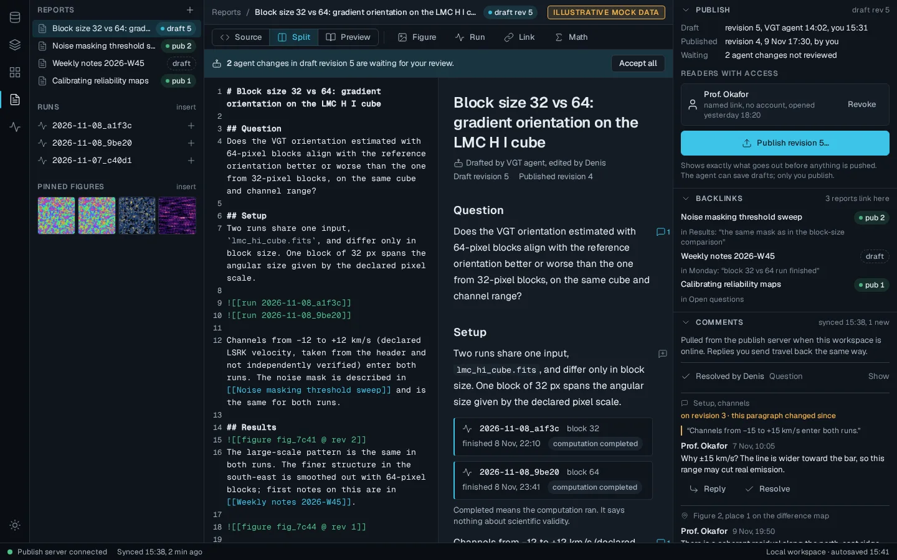
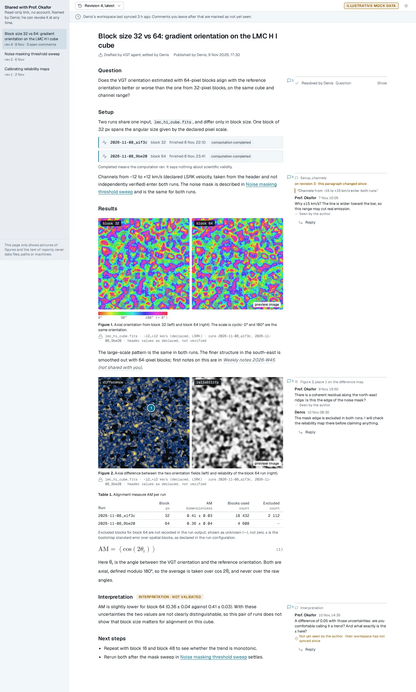
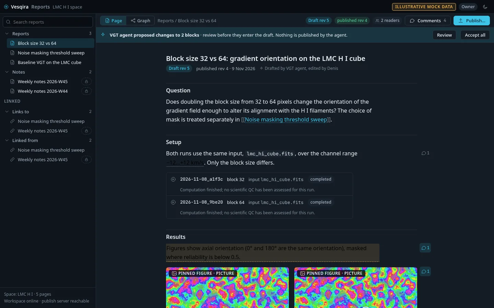
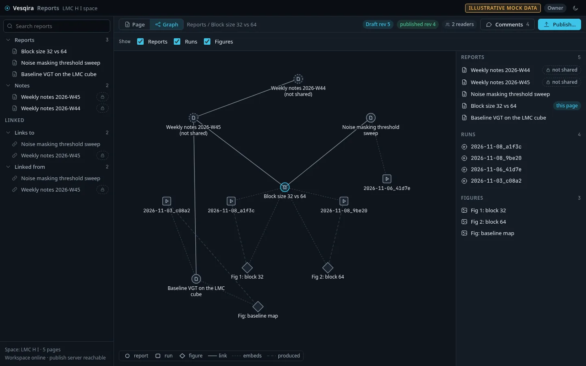
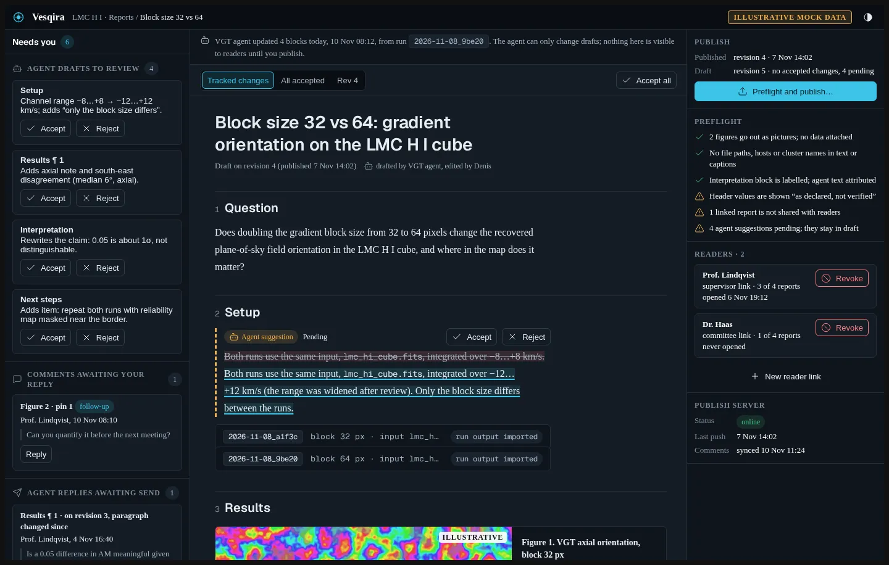
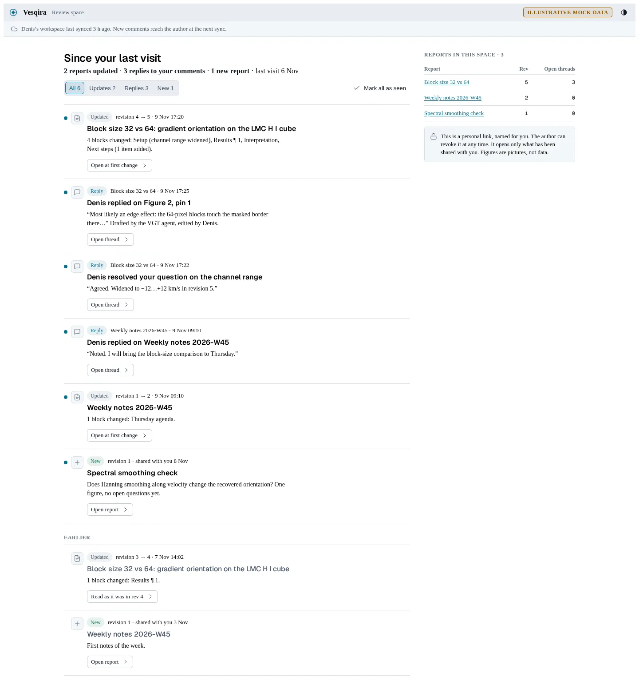

A · Document in the workbench
The report opens inside the existing workbench: source and preview side by side, publish state, backlinks and comments stacked on the right. The professor reads a calm column with comments in the margin next to their paragraphs.

Owner: editor

Reader: report with margin comments
- + most consistent with the app you approved
- + margin comments are easy to follow
- − split view is cramped on a 13" laptop
B · Linked pages
Notion/Obsidian feel: one page that renders as you type, a tree of pages with links to and from, and a graph of reports, runs and figures (the mind map). Comments open as pop-ups from highlighted text.

Owner: page editor

Graph of reports, runs and figures
- + the graph shows how work connects
- + closest to what you used in Notion
- − comment pop-ups cover the text they discuss
C · Inbox and changes first
Built around what changed. You get a queue: agent edits to accept or reject block by block, comments waiting for you, replies the agent drafted. The professor lands on "Since your last visit" and jumps straight to changed paragraphs.

Owner: desk with the agent's tracked changes

Reader: since your last visit
- + fastest for a busy professor
- + safest way to review agent edits
- − less of a place to browse and think; serif fallback in its screenshots is not the intended font